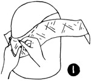
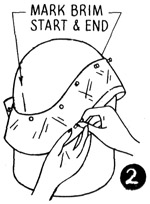
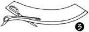
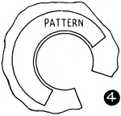
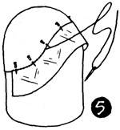
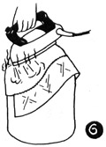
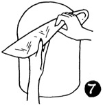

1952—How to Make Hats
by Ruby Carnahan
Blocking a Felt Hood into a Tapered Brim
MATERIAL REQUIRED
- Fur felt hood
- Utility head block in correct headsize
- 3/4 of a yard of headband ribbon
BLOCKING CROWN
Wrap felt in a damp cloth for several hours tefore blocking. Pull felt hood over Utility block, steam, pull and stretch felt down, until all wrinkles have been removed and felt fits head block perfectly. Pin felt to block (with push pins) and tie a blocking cord around block over felt. Let felt crown dry on block. Mark back and front of crown. Measure your head from back to front and from side to side, depth crown is to be, and mark these measurements on felt. Draw a line around block on felt. When crown is dry remove crown from block and cut off excess felt on bottom of crown 1/2" below line.
MAKING A PATTERN FOR A FELT BRIM
(Illus. 1) Put blocked felt crown on Utility head block. Use a bias piece of crinoline to make brim pattern, pinning one edge of crinoline to bottom of felt crown, stretching crinoline slightly as you pin. (Use push pins).
(Illus. 2) Adjust and manipulate crinoline brim pattern, until you are satisfied that brim will be becoming to you. Then mark crown where brim starts and ends, draw a line around headsize and brim edge on crinoline pattern.
(Illus. 3) Remove pattern and cut off excess crinoline on line around headsize and brim edge.
Use this crinoline pattern to cut out felt brim.
Using the principles given above, many smart and unusual brims can be created.
CUTTING OUT FELT BRIM
Use the piece of felt cut off from the blocked crown for the brim. Cut this piece open at the narrowest place, and lay on a pressing board, cover with a damp cloth and steam. Stretch felt until it is large enough for pattern to fit on the felt (Illus. 4).
Place crinoline brim pattern on felt and mark around pattern. Remove pattern and cut out felt on line drawn. Match markings on crown and brim and (Illus. 5) slip brim under crown on block, pin together. Remove from block and sew crown and brim together using a small overcast stitch.
Then (Illus. 6) put hat back on Utility head block and thoroughly steam crown and brim, pulling crown down to fit block.
Pin crown around bottom to block, let dry on block (Illus. 7).
Finish headsize with a swirled ribbon headband.
Instructions for ribbon headband page 45.